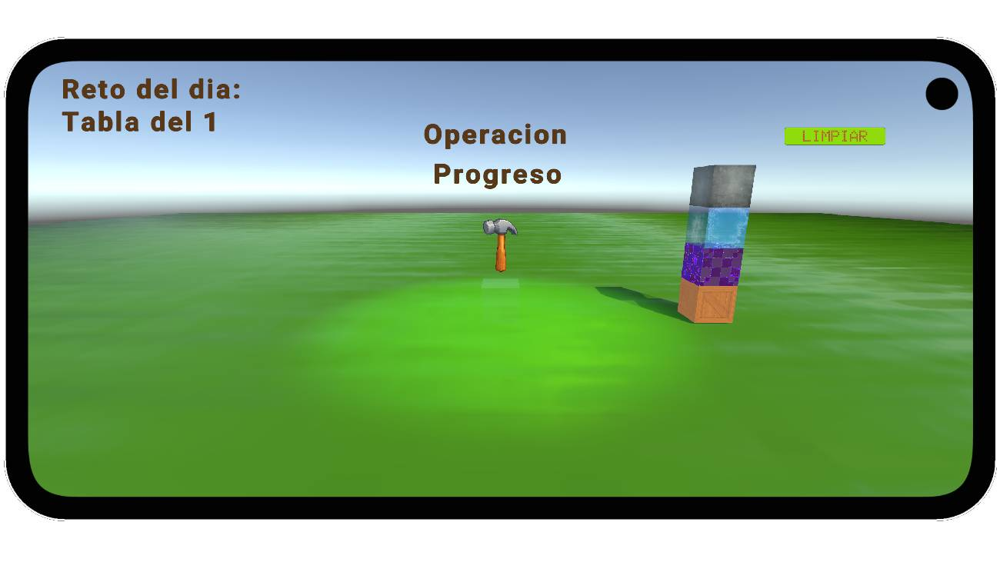

Proyecto en desarrollo
Juego educativo que representa la multiplicación mediante bloques visuales apilables. Permite comprender las tablas como construcción espacial y no solo memorización, con detección de patrones de comportamiento para sugerir ejercicios de acuerdo a los avances del niño.
